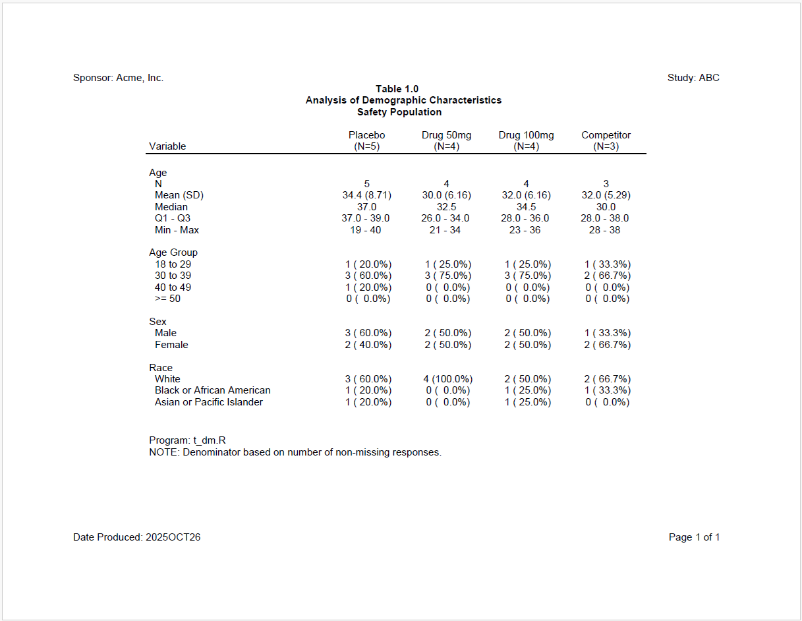

Now let’s look at a still more complicated example. For this example, we want to create a demographics table that can be used across different studies. Therefore, we’ll need to let the user pass in parameters like treatment groups, the path to the data, and which variables to include in the analysis. The macro package makes it easy to create such a parameterized table.
To generate the table, we will need four files:
In the second listing example, we assigned macro parameters directly
in R code.
That technique will be used again here:
# Assign base path
base_path <- "./macro/code"
# Assign relative paths
log_path. <- file.path(base_path, "log")
output_path. <- file.path(base_path, "output")
template_path. <- file.path(base_path, "templates")
data_path. <- file.path(base_path, "data")
# Assign global variables
sponsor_name. <- "Acme, Inc."
study_name. <- "ABC"
prog_nm. <- "t_dm"
# Select analysis variables
vars. <- c("age", "ageg") # "sex", "race"
# Assign or get titles
titles. <- c("Table 1.0",
"Analysis of Demographic Characteristics",
"Safety Population")
# Assign or get footnotes
footnotes. <- c(paste0("Program: ", prog_nm., ".R"),
"NOTE: Denominator based on number of non-missing responses.")
# Assign treatment groups and labels
trt_grps. <- c("ARM A" = "Placebo", "ARM B" = "Drug 50mg", "ARM C" = "Drug 100mg",
"ARM D" = "Competitor")
# Assign other parameters
env. <- "dev" # "prod"
out_type. <- "PDF"
# Preprocess and Run Example3
macro::msource("./macro/Example3.R", "./macro/code/t_dm.R")Observe that there are four possible analysis variables for this demographics table: “age”, “ageg”, “sex”, and “race”. The program allows the user to pick which variables will be added to the final report. The template table program will conditionalize the code on the selected analysis variables.
Here is the macro-enabled template program that the above driver is calling:
#####################################################################
# Program Name: prog_name.
# Study: study_name.
#####################################################################
library(sassy)
# Prepare Log -------------------------------------------------------------
options("logr.autolog" = TRUE,
"logr.on" = TRUE,
"logr.notes" = FALSE,
"procs.print" = FALSE)
# Assign program name
prog_nm <- "prog_nm."
# Construct paths
l_path <- file.path("log_path.", paste0(prog_nm, ".log"))
o_path <- file.path("output_path.", prog_nm)
# Open log
lf <- log_open(l_path)
# Prepare formats ---------------------------------------------------------
sep("Prepare formats")
put("Compile format catalog")
fc <- fcat(MEAN = "%.1f", STD = "(%.2f)",
Q1 = "%.1f", Q3 = "%.1f",
MIN = "%d", MAX = "%d",
CNT = "%2d", PCT = "(%5.1f%%)")
# Load and Prepare Data ---------------------------------------------------
sep("Prepare Data")
#%if ("env." == "prod")
put("Get data")
libname(dat, "data_path.", "Rda")
adsl <- dat$dm
#%else
put("Create sample ADSL data.")
#%include 'template_path./dat01.R'
#%end
put("Log starting dataset")
put(adsl)
put("Filter out screen failure")
adsl_f <- subset(adsl, ARM != 'SCREEN FAILURE')
put("Get ARM population counts")
proc_freq(adsl_f, tables = ARM,
output = long,
options = v(nopercent, nonobs)) -> arm_pop
put("Log treatment groups variable")
trt_grps <- trt_grps.
put(trt_grps)
# Initialize block variables ----------------------------------------------
# Initialize final dataset
final <- NULL
#%if ("age" %in% vars.)
# Age Summary Block -------------------------------------------------------
sep("Create summary statistics for age")
put("Call means procedure to get summary statistics for age")
proc_means(adsl_f, var = AGE,
stats = v(n, mean, std, median, q1, q3, min, max),
by = ARM,
options = v(notype, nofreq)) -> age_stats
put("Combine stats")
datastep(age_stats,
format = fc,
drop = find.names(age_stats, start = 4),
{
VAR <- "Age"
`Mean (SD)` <- fapply2(MEAN, STD)
Median <- MEDIAN
`Q1 - Q3` <- fapply2(Q1, Q3, sep = " - ")
`Min - Max` <- fapply2(MIN, MAX, sep = " - ")
}) -> age_comb
put("Transpose ARMs into columns")
proc_transpose(age_comb,
var = names(age_comb),
copy = VAR, id = BY,
name = LABEL) -> age_block
put("Append results")
if (is.null(final)) {
final <- age_block
} else {
final <- rbind(final, age_block)
}
#%end
#%if ("ageg" %in% vars.)
# Age Group Block ----------------------------------------------------------
sep("Create frequency counts for Age Group")
put("Age categories")
agecat <- value(condition(x >= 18 & x <= 29, "18 to 29"),
condition(x >=30 & x <= 39, "30 to 39"),
condition(x >=40 & x <=49, "40 to 49"),
condition(x >= 50, ">= 50"),
as.factor = TRUE)
put("Categorize AGE")
adsl_f$AGECAT <- fapply(adsl_f$AGE, agecat)
put("Get age group frequency counts")
proc_freq(adsl_f,
table = AGECAT,
by = ARM,
options = nonobs) -> ageg_freq
put("Combine counts and percents and assign age group factor for sorting")
datastep(ageg_freq,
format = fc,
keep = v(VAR, LABEL, BY, CNTPCT),
{
VAR <- "Age Group"
CNTPCT <- fapply2(CNT, PCT)
LABEL <- CAT
}) -> ageg_comb
put("Sort by age group factor")
proc_sort(ageg_comb, by = v(BY, LABEL)) -> ageg_sort
put("Tranpose age group block")
proc_transpose(ageg_sort,
var = CNTPCT,
copy = VAR,
id = BY,
by = LABEL,
options = noname) -> ageg_block
put("Append results")
if (is.null(final)) {
final <- ageg_block
} else {
final <- rbind(final, ageg_block)
}
#%end
#%if ("sex" %in% vars.)
# Sex Block ---------------------------------------------------------------
sep("Create frequency counts for SEX")
put("Sex decodes")
fmt_sex <- value(condition(x == "M", "Male"),
condition(x == "F", "Female"),
condition(TRUE, "Other"),
as.factor = TRUE)
put("Get sex frequency counts")
proc_freq(adsl_f, tables = SEX,
by = ARM,
options = nonobs) -> sex_freq
put("Combine counts and percents.")
datastep(sex_freq,
format = fc,
rename = list(CAT = "LABEL"),
drop = v(CNT, PCT),
{
VAR <- "Sex"
CNTPCT <- fapply2(CNT, PCT)
}) -> sex_comb
put("Transpose ARMs into columns")
proc_transpose(sex_comb, id = BY,
var = CNTPCT,
copy = VAR, by = LABEL,
options = noname) -> sex_trans
put("Apply formats")
datastep(sex_trans,
{
LABEL <- fapply(LABEL, fmt_sex)
}) -> sex_cnts
put("Sort by label")
proc_sort(sex_cnts, by = LABEL) -> sex_block
put("Append results")
if (is.null(final)) {
final <- sex_block
} else {
final <- rbind(final, sex_block)
}
#%end
#%if ("race" %in% vars.)
# Race block --------------------------------------------------------------
sep("Create frequency counts for RACE")
put("Race decodes")
fmt_race <- value(condition(x == "WHITE", "White"),
condition(x == "BLACK", "Black or African American"),
condition(TRUE, "Other"),
as.factor = TRUE)
put("Get race frequency counts")
proc_freq(adsl_f, tables = RACE,
by = ARM,
options = nonobs) -> race_freq
put("Combine counts and percents.")
datastep(race_freq,
format = fc,
rename = list(CAT = "LABEL"),
drop = v(CNT, PCT),
{
CNTPCT <- fapply2(CNT, PCT)
}) -> race_comb
put("Transpose ARMs into columns")
proc_transpose(race_comb, id = BY, var = CNTPCT,
copy = VAR, by = LABEL, options = noname) -> race_trans
put("Clean up")
datastep(race_trans,
{
VAR <- "Race"
LABEL <- fapply(LABEL, fmt_race)
}) -> race_cnts
put("Sort by label")
proc_sort(race_cnts, by = LABEL) -> race_block
put("Append results")
if (is.null(final)) {
final <- race_block
} else {
final <- rbind(final, race_block)
}
#%end
# Report ------------------------------------------------------------------
#% Include standard report code 01
#%include 'template_path./rpt01.R'
# Clean Up ----------------------------------------------------------------
sep("Clean Up")
put("Close log")
log_close()
# Uncomment to view report
# file.show(res$modified_path)
# Uncomment to view log
# file.show(lf)In the above code, notice the following:
Here is the template code for the sample dataset:
adsl <- read.table(header = TRUE, text = '
SUBJID ARM SEX RACE AGE
"001" "ARM A" "F" "WHITE" 19
"002" "ARM B" "F" "WHITE" 21
"003" "ARM C" "F" "WHITE" 23
"004" "ARM D" "F" "BLACK" 28
"005" "ARM A" "M" "WHITE" 37
"006" "ARM B" "M" "WHITE" 34
"007" "ARM C" "M" "WHITE" 36
"008" "ARM D" "M" "WHITE" 30
"009" "ARM A" "F" "WHITE" 39
"010" "ARM B" "F" "WHITE" 31
"011" "ARM C" "F" "BLACK" 33
"012" "ARM D" "F" "WHITE" 38
"013" "ARM A" "M" "BLACK" 37
"014" "ARM B" "M" "WHITE" 34
"015" "ARM C" "M" "WHITE" 36
"016" "ARM A" "M" "WHITE" 40')Here is the template code for the report snippet:
sep("Create and print report")
#%if (%symexist(out_type) == FALSE)
#%let out_type <- "RTF"
#%end
# Create Table
tbl <- create_table(final, first_row_blank = TRUE) |>
column_defaults(from = `ARM A`, to = `ARM D`, align = "center", width = 1.1) |>
stub(vars = c("VAR", "LABEL"), "Variable", width = 2.5) |>
define(VAR, blank_after = TRUE, dedupe = TRUE, label = "Variable",
label_row = TRUE) |>
define(LABEL, indent = .25, label = "Demographic Category") |>
titles(titles., bold = TRUE) |>
footnotes(paste0("Program: ", prog_nm, ".R"),
"NOTE: Denominator based on number of non-missing responses.")
# Add treatment groups
for (trt in names(trt_grps)) {
tbl <- define(tbl, trt, label = trt_grps[trt], n = arm_pop[trt], standard_eval = TRUE)
}
# Create report
rpt <- create_report(o_path,
output_type = "out_type.",
font = "Arial") |>
page_header("Sponsor: Company", "Study: ABC") |>
set_margins(top = 1, bottom = 1) |>
add_content(tbl) |>
page_footer("Date Produced: {toupper(fapply(Sys.Date(), '%Y%b%d'))}",
right = "Page [pg] of [tpg]")
put("Write out the report")
res <- write_report(rpt)In the above reporting code, notice the following:
out_type variable does not exist. The condition uses the
%symexist() function to make that determination.trt_grps variable.Upon execution of the call to msource(), the following
code will be generated:
#####################################################################
# Program Name: t_dm
# Study: ABC
#####################################################################
library(sassy)
# Prepare Log -------------------------------------------------------------
options("logr.autolog" = TRUE,
"logr.on" = TRUE,
"logr.notes" = FALSE,
"procs.print" = FALSE)
# Assign program name
prog_nm <- "t_dm"
# Construct paths
l_path <- file.path("c:/packages/Testing/macro/code/log", paste0(prog_nm, ".log"))
o_path <- file.path("c:/packages/Testing/macro/code/output", prog_nm)
# Open log
lf <- log_open(l_path)
# Prepare formats ---------------------------------------------------------
sep("Prepare formats")
put("Compile format catalog")
fc <- fcat(MEAN = "%.1f", STD = "(%.2f)",
Q1 = "%.1f", Q3 = "%.1f",
MIN = "%d", MAX = "%d",
CNT = "%2d", PCT = "(%5.1f%%)")
# Load and Prepare Data ---------------------------------------------------
sep("Prepare Data")
put("Create sample ADSL data.")
adsl <- read.table(header = TRUE, text = '
SUBJID ARM SEX RACE AGE
"001" "ARM A" "F" "WHITE" 19
"002" "ARM B" "F" "WHITE" 21
"003" "ARM C" "F" "WHITE" 23
"004" "ARM D" "F" "BLACK" 28
"005" "ARM A" "M" "WHITE" 37
"006" "ARM B" "M" "WHITE" 34
"007" "ARM C" "M" "WHITE" 36
"008" "ARM D" "M" "WHITE" 30
"009" "ARM A" "F" "WHITE" 39
"010" "ARM B" "F" "WHITE" 31
"011" "ARM C" "F" "BLACK" 33
"012" "ARM D" "F" "WHITE" 38
"013" "ARM A" "M" "BLACK" 37
"014" "ARM B" "M" "WHITE" 34
"015" "ARM C" "M" "WHITE" 36
"016" "ARM A" "M" "WHITE" 40')
put("Log starting dataset")
put(adsl)
put("Filter out screen failure")
adsl_f <- subset(adsl, ARM != 'SCREEN FAILURE')
put("Get ARM population counts")
proc_freq(adsl_f, tables = ARM,
output = long,
options = v(nopercent, nonobs)) -> arm_pop
put("Log treatment groups variable")
trt_grps <- c('ARM A' = 'Placebo', 'ARM B' = 'Drug 50mg',
'ARM C' = 'Drug 100mg', 'ARM D' = 'Competitor')
put(trt_grps)
# Initialize block variables ----------------------------------------------
# Initialize final dataset
final <- NULL
# Age Summary Block -------------------------------------------------------
sep("Create summary statistics for age")
put("Call means procedure to get summary statistics for age")
proc_means(adsl_f, var = AGE,
stats = v(n, mean, std, median, q1, q3, min, max),
by = ARM,
options = v(notype, nofreq)) -> age_stats
put("Combine stats")
datastep(age_stats,
format = fc,
drop = find.names(age_stats, start = 4),
{
VAR <- "Age"
`Mean (SD)` <- fapply2(MEAN, STD)
Median <- MEDIAN
`Q1 - Q3` <- fapply2(Q1, Q3, sep = " - ")
`Min - Max` <- fapply2(MIN, MAX, sep = " - ")
}) -> age_comb
put("Transpose ARMs into columns")
proc_transpose(age_comb,
var = names(age_comb),
copy = VAR, id = BY,
name = LABEL) -> age_block
put("Append results")
if (is.null(final)) {
final <- age_block
} else {
final <- rbind(final, age_block)
}
# Age Group Block ----------------------------------------------------------
sep("Create frequency counts for Age Group")
put("Age categories")
agecat <- value(condition(x >= 18 & x <= 29, "18 to 29"),
condition(x >=30 & x <= 39, "30 to 39"),
condition(x >=40 & x <=49, "40 to 49"),
condition(x >= 50, ">= 50"),
as.factor = TRUE)
put("Categorize AGE")
adsl_f$AGECAT <- fapply(adsl_f$AGE, agecat)
put("Get age group frequency counts")
proc_freq(adsl_f,
table = AGECAT,
by = ARM,
options = nonobs) -> ageg_freq
put("Combine counts and percents and assign age group factor for sorting")
datastep(ageg_freq,
format = fc,
keep = v(VAR, LABEL, BY, CNTPCT),
{
VAR <- "Age Group"
CNTPCT <- fapply2(CNT, PCT)
LABEL <- CAT
}) -> ageg_comb
put("Sort by age group factor")
proc_sort(ageg_comb, by = v(BY, LABEL)) -> ageg_sort
put("Tranpose age group block")
proc_transpose(ageg_sort,
var = CNTPCT,
copy = VAR,
id = BY,
by = LABEL,
options = noname) -> ageg_block
put("Append results")
if (is.null(final)) {
final <- ageg_block
} else {
final <- rbind(final, ageg_block)
}
# Report ------------------------------------------------------------------
sep("Create and print report")
# Create Table
tbl <- create_table(final, first_row_blank = TRUE) |>
column_defaults(from = `ARM A`, to = `ARM D`, align = "center", width = 1.1) |>
stub(vars = c("VAR", "LABEL"), "Variable", width = 2.5) |>
define(VAR, blank_after = TRUE, dedupe = TRUE, label = "Variable",
label_row = TRUE) |>
define(LABEL, indent = .25, label = "Demographic Category") |>
titles(c('Table 1.0', 'Analysis of Demographic Characteristics',
'Safety Population'), bold = TRUE) |>
footnotes(c('Program: t_dm.R',
'NOTE: Denominator based on number of non-missing responses.'))
# Add treatment groups
for (trt in names(trt_grps)) {
tbl <- define(tbl, trt, label = trt_grps[trt], n = arm_pop[trt],
standard_eval = TRUE)
}
# Create report
rpt <- create_report(o_path,
output_type = "PDF",
font = "Arial") |>
page_header("Sponsor: Acme, Inc.", "Study: ABC") |>
set_margins(top = 1, bottom = 1) |>
add_content(tbl) |>
page_footer("Date Produced: {toupper(fapply(Sys.Date(), '%Y%b%d'))}",
right = "Page [pg] of [tpg]")
put("Write out the report")
res <- write_report(rpt)
# Clean Up ----------------------------------------------------------------
sep("Clean Up")
put("Close log")
log_close()
# Uncomment to view report
# file.show(res$modified_path)
# Uncomment to view log
# file.show(lf)Observe that the generated code is clean and easy to read. Only the necessary lines from the template program are emitted during pre-processing.
Here is the output report: 
To add more analysis variables, just change the “trt_groups.” macro variable in the driver program. You can also change the titles, footnotes, and other parameters as desired. The generated code will adjust dynamically to all parameter settings.
Next: Disclaimer